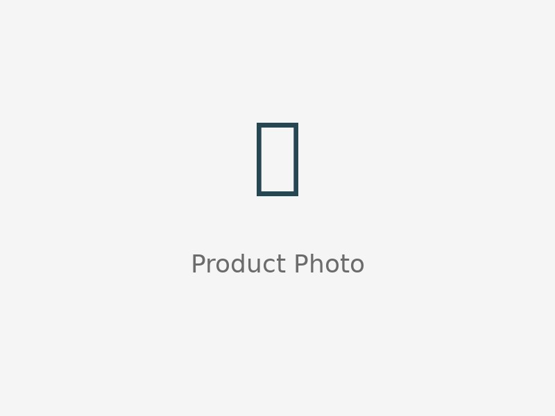

Kitchen Gadgets
10 Must-Have Kitchen Gadgets for 2026
A great kitchen isn't about having more stuff — it's about having the right stuff. These 10 gadgets are the ones we keep reaching for: clever, cute, and genuinely useful.
Affiliate Disclosure: This post contains affiliate links. As an Amazon Associate, we earn from qualifying purchases — at no extra cost to you.
1. Multi-Function Vegetable Chopper
Dice onions in seconds without the tears. A good chopper turns 20 minutes of prep into 5.

5-in-1 Vegetable Chopper
Stainless steel blades, easy-clean container, compact storage.
Pros
- Fast prep
- Easy to clean
Cons
- Hand-wash blades
2. Collapsible Storage Containers
They flatten when empty — perfect for small kitchens and meal prep.
Collapsible Meal Prep Containers (Set)
Space-saving, leak-proof lids, microwave safe.
Pros
- Saves cabinet space
- Leak-proof
Cons
- Not oven-safe
3. Over-Sink Dish Drying Rack
Rolls up when not in use and sits right over the sink — no counter space wasted.
Roll-Up Over-Sink Drying Rack
Sturdy stainless steel, heat-resistant, rolls for storage.
Pros
- Saves counter space
- Doubles as trivet
Cons
- Measure your sink first
4–10. More Cute Finds
We're constantly testing new gadgets. Here are more favorites worth a look:
- Electric milk frother — café lattes at home. Check price →
- Silicone stretch lids — ditch the cling wrap. Check price →
- Magnetic measuring spoons — they nest, they stick, they're cute. Check price →
- Avocado slicer 3-in-1 — pit, slice, scoop. Check price →
- Under-sink organizer — tames the chaos under your sink. Check price →
- Herb keeper — fresh herbs for weeks. Check price →
- Clip-on strainer — no more bulky colanders. Check price →